Abstract
Function generator are useful tools in academia and industries. Mostly they are avalaible in market. In this project we are trying to understand and study simple frequency generators with use of OpAmp. We usec generic OpAmp Ic LM741, which is single package and easy to understand with benefit of extensive acedemic experince.Function generator is circuit which generates periodic function with predictable frequencies with respect to time. Here, we will study only mono frequency generator but it can also generate superposed functions. Signals from Function generator comes in many forms but mostly it is either sinusoidal or square wave. We will generate sinusoidal, square and triangle wave as output.
We used basic circuits with few modification as our need. With use of IC LM741 we used OpAmp in our circuit.
For Sinusoidal wave we used Wein Bridge circuit, which is easy to understand and impliment. Also, wein bridge circuit is quite less noice compare to it's compitition RC phase shift Oscillator, which have more component than Wein bridge and more complicated to understand. For Square wave we used standard astable multivibrator cicuit, with little modification. Lastly, Triangle wave can be made from just attaching Integrator to our square wave output with some regulation.
Now, each circuit ( this wave form generator) has different block, basically we divided whole circuit in there block. Main work for us is to combine all of this. We wandered across CMOS families, BJTs but finally we sattled into physical swith which is coupled for power transmission and also for output change.[cite:@gayakwad2012op] [cite:@horowitz1989art] [cite:@wiki]
Blocks
As told in introduction each circuit is in their blocks. First block for sine wave which is nothing but wien bridge circuit, second is sqaure which is astable multivibrator, third for triangular wave which integrator attached to second block (square wave block).
Block 1: Sine wave generator
In first block, we have basic circuit of wein bridge. You can see in figure 1. In center we have OpAmp (IC LM741). This is amplifier with RC component attached with input and output. Here, at one end there is RC parallel component and at other end series RC component.
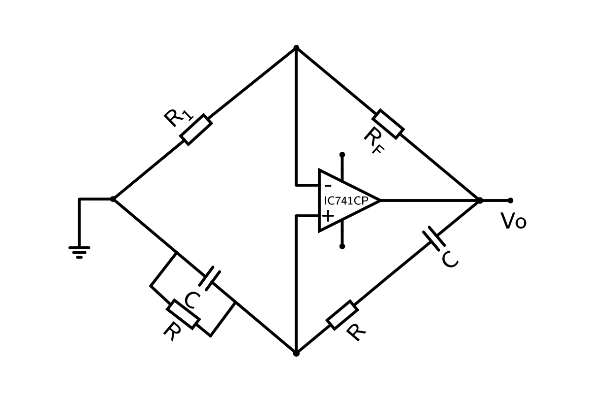
Here, frequency is given by,
\[\label{eq:org513cb7c} f =\frac{1}{2 \pi RC}\]
For sustaing oscilation gain must be 3 and for non inverting amplifier gain,
\[\label{eq:orgad3dd9a} A = 1+\frac{R_{F}}{R_{1}} = 3\]
So, we get relation \(R_{F}=R_{1}\)
Here, you can see our block circuit, at the end we attached two zener diode for regulation to the output. As you can see OpAmp in IC LM741 package. Power supply given from 4 and 7 to 12V and -12V. We chose \(R_{1}=12k\Omega\). By relation of \(R_{1}\) and \(R_{F}\), we got \(R_{F}=24k\Omega\).
For frequency range we used Potential with max range of \(100k\Omega\). So, lowest and maximum frequency whould be (with constant capacitance at \(50nF\)),
\[\label{eq:org284eb02} f_{min} = \frac{1}{2\pi\times100k\times 10n} \approx 159 hz\]
\[\label{eq:orgc56dc93} f_{max} = \frac{1}{2\pi\times100\times 10n} \approx 159k hz\]
So, frequency range would be \(159 hz\) to \(159k hz\)
Tuning sine wave generator
The output of sine wave generator can be little noisy. This will be reasonable as we will see it's working. Any sine wave generator will work as frequency extractor from DC or any AC levels. Since, Row signals have superposed waves in nearly all the spectrum, one have to rely on different filters and component which can attenuate desire frequency and theoretically minimize every other frequency.
In wien bridge, this is principle is mostly exploited. We have two RC components, one in series make low pass filter and secondly there is parallel component which work as high pass filter. In figure there is highlighted areas of both filters. Here, it is quite straight forward see that low pass will block higher frequency and high pass will vice versa. So, if we set both filter such that combination will give us some band (quite narrow band in fact). Center of this frequencies will cut off frequency of both filters. When wien bridge balances than this band of frequency will be resonated and give final output.
Series RC components in Wien bridge
Series RC component which works as low pass filter have this type of phenomenan, total \(V_{in}\) and \(V_{out}\) will be proportional to the to total reactance. With voltage divider low,
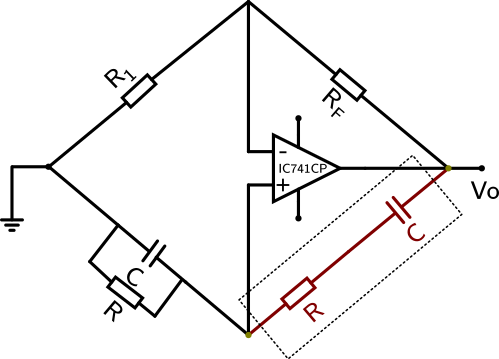
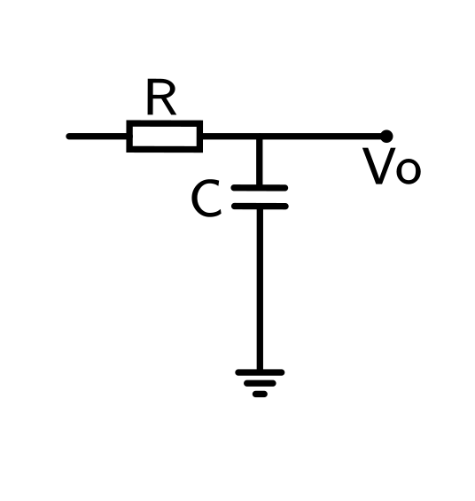
\[\frac{V_o}{V_i}= \frac{X_c}{R+X_c}\]
Where, \(X_c\) is reactance of capacitor valued as \(\frac{-j}{wC}\). So,
\[\frac{V_o}{V_i}=\left(\frac{1}{1+w^2R^2C^2}\right)^{\frac{1}{2}}\]
If we take \(w_0\) as breakpoint or curoff point for our RC component than \(w_0=\frac{1}{RC}\). Here RC is time constant.
Graph of low pass shown in figure 3a. Where we can see frequency equals to \(w=w_0\) at some point. Also, notice that even though we have cutoff frequency at \(w_0\), there is enough frequencies around \(w_0\). Basically filters always have some noise which does not filtered. Here, if you use higher order filter than this slope of voltage to frequency would be slightly higher. With sufficiently high order filter you can make abrupt change in frequency domain, but this comes with it's consequences. With higher order filters other noises dominates since we will have too much components. We will use second order filter here, which is quite balance in accuracy and component noise.
| 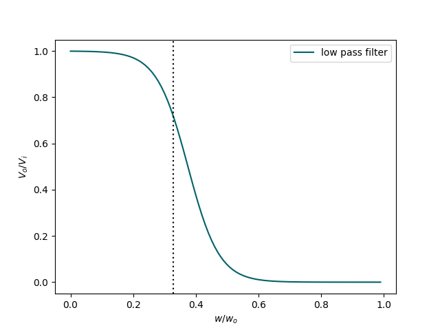 | 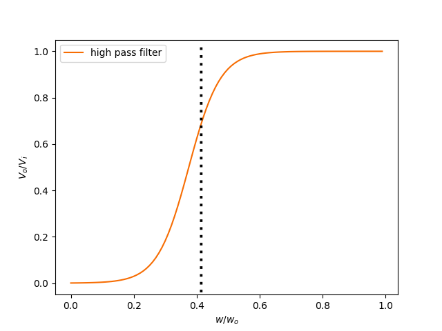 |
combination of high and low pass fiter 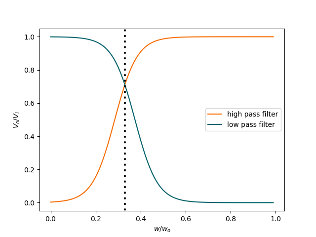
Parallel RC components in Wien bridge
Similarly to that of series RC components, we can define high pass filter as parallel RC component. In parallel circuit when frequency increases reactance decreases and total reactance decreases. So, consequently higher frequency pass and lower frequency will not. Reactance of high pass filter would be following,
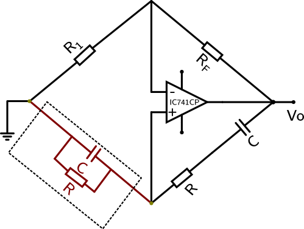
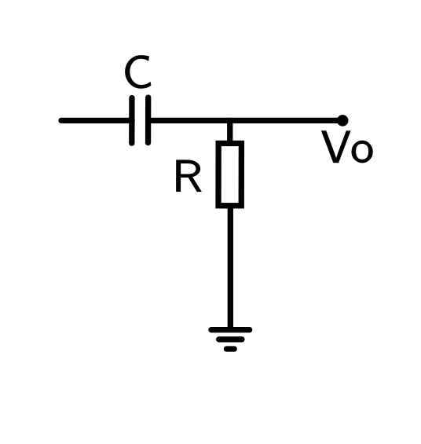
\[\frac{V_o}{V_i}= \frac{R}{R+X_c}\]
Again, \(X_c\) is capacitance reactance and valued at \(-frac{-j}{wC}\)
\[\frac{V_o}{V_i}=\left(\frac{R^2}{R^2+\frac{1}{w^2C^2}}\right)^{\frac{1}{2}}\]
This relationship is shown in figure 3b. With cutoff frequency at \(w_0\). As we can see here also noise of unwanted frequency range are here.
Total signal and Error terms
In wien bridge we have both the low pass and high pass filters. So, total response of that shown in figure 3c. Here, we have gain frequencies in range between cutoff frequency. Since, this range amplify in non inverting amplifier and feedback. This frequency will resonant and becomes our output signal. From now on, we will say \(w_0\) as resonant frequency. Final output in our theoretical studies will be this resonant frequency. Practically this frequency is observed with error frequencies.
Error terms in here will be in following cases. /1) since we have band, we get many frequency output from the band, which is quite distorted in itself./ and 2) here working of filters are note up to expectation and we have noise from whole spectrum of frequency. This is quite headache, unfortunately we have both the cases in our experiment.
Fourier analysis of Output signal
We can minimize this errors by using Fourier analysis of output signal. As one can say that DC level is made of superposed infinite number of waves with different wavelengths,
\[DC_{level}= \sum_{n}^{\infty}(a_n\cos(w_nt)+b_n\sin(w_nt))\]
Here, \(a_n\) and \(b_n\) are coefficients of Fourier series. What wein bridge does is extract desire frequency from DC level.
In our experiment we got distorted sine wave which means their is higher frequencies in effect. Also after some values of Potentiometer, there is just square signal. Another distortion occur was from lower frequencies manly \(\appro 50Hz\) and around \(300Hz\), which are making signal less stable and sometimes dominates resonant frequency.
For higher frequency, we got idea to put low pass filter around value of resonant frequency that would bring signal to more on resonant frequency. This is can be seen in block diagram of sine wave from figure 2 and figure below 4. This should give us better results ad we intended.
For lower frequency, we have high pass filter, which eliminate those lower frequencies and stabilize our signal. This can be shown from block diagram figure 2 and figure 5.
Output of sine wave after tuning
The output which we expected from our upper analysis at different frequency is shown below in figure [fig:sineout]. The frequency range of sine wave output is given below in table. You should know that this
| 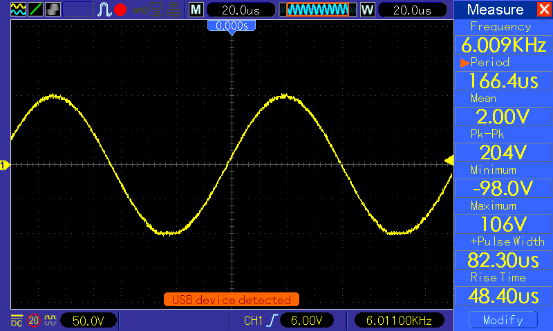 | 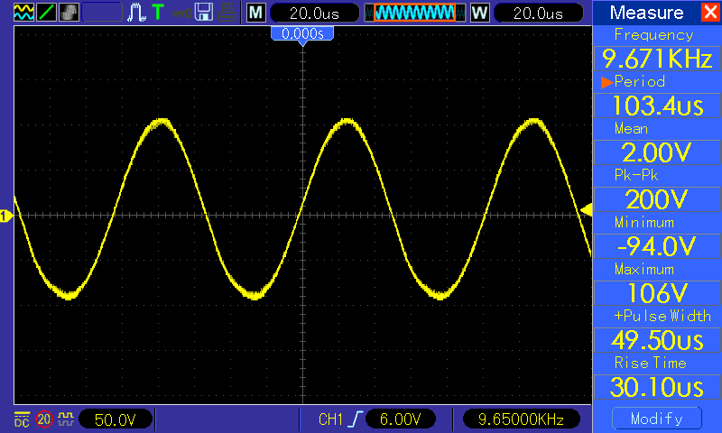 | |
| 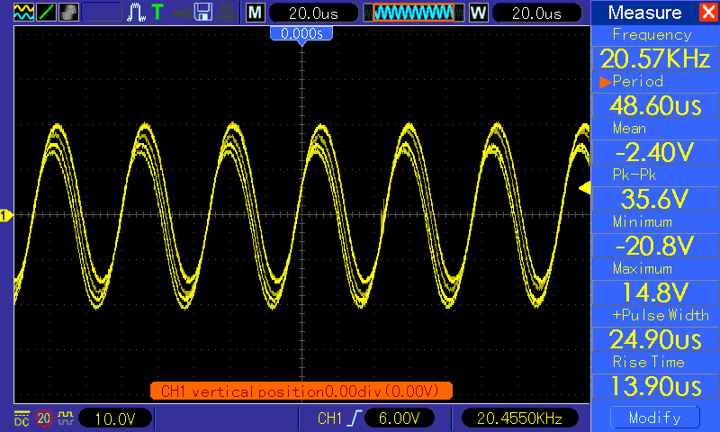 | 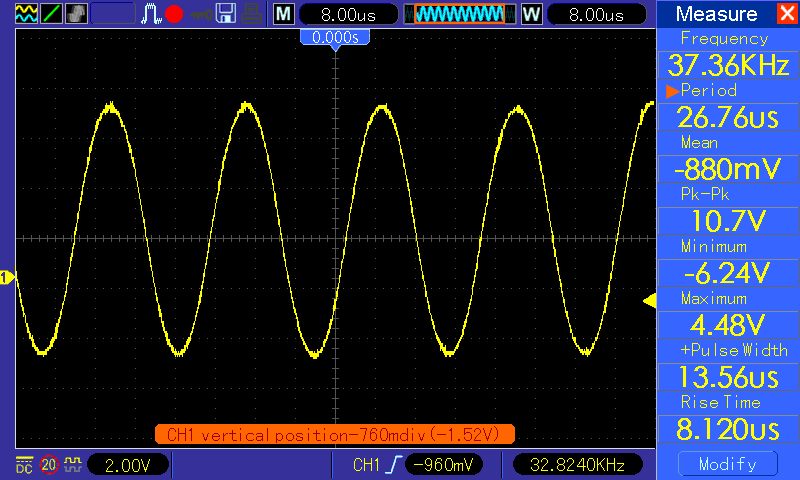 | |
| 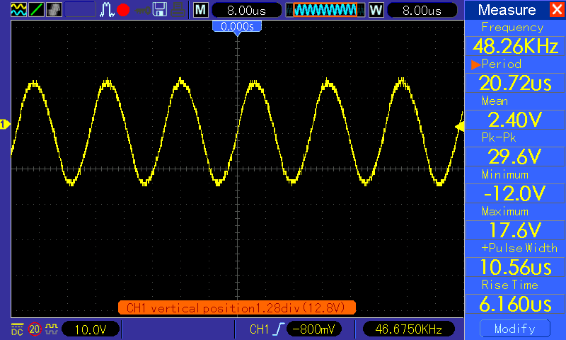 | 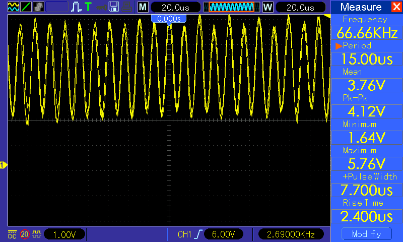 | |
| 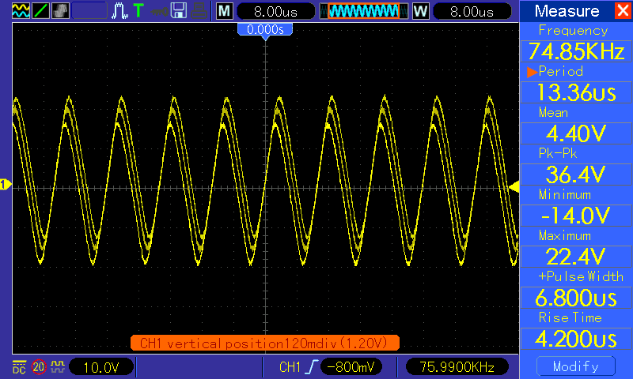 | 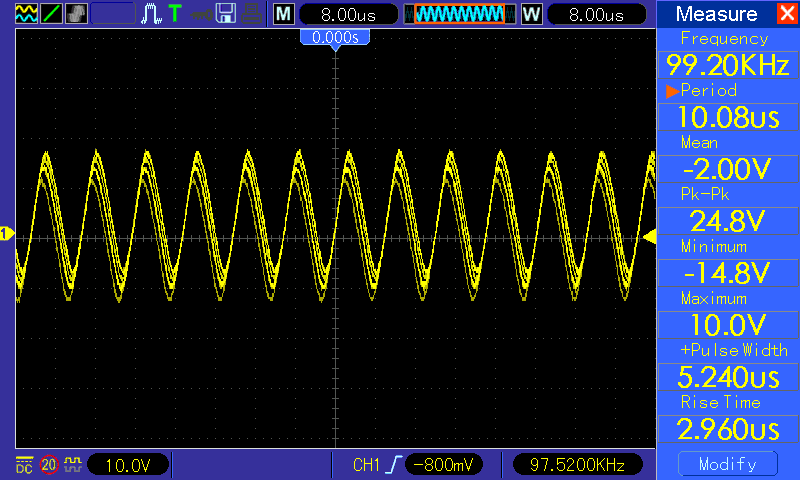 |
wave generator 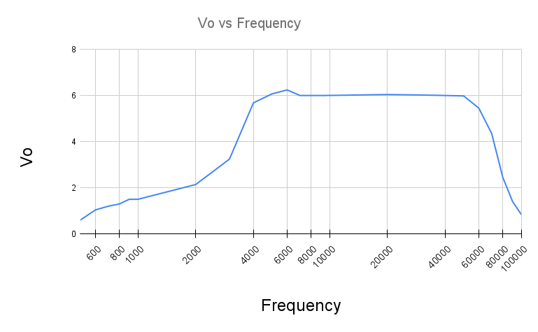
\(V_{out}{p-p}\) is after applying all the filters and tuning. Original output is quite large in peak to peak voltage around 5 times big.
Block 2: Square wave generator
As square wave generator we have basic astable multivibrator. This circuit works on scenario where output will have to stable state and it will swing between them, hence the name.
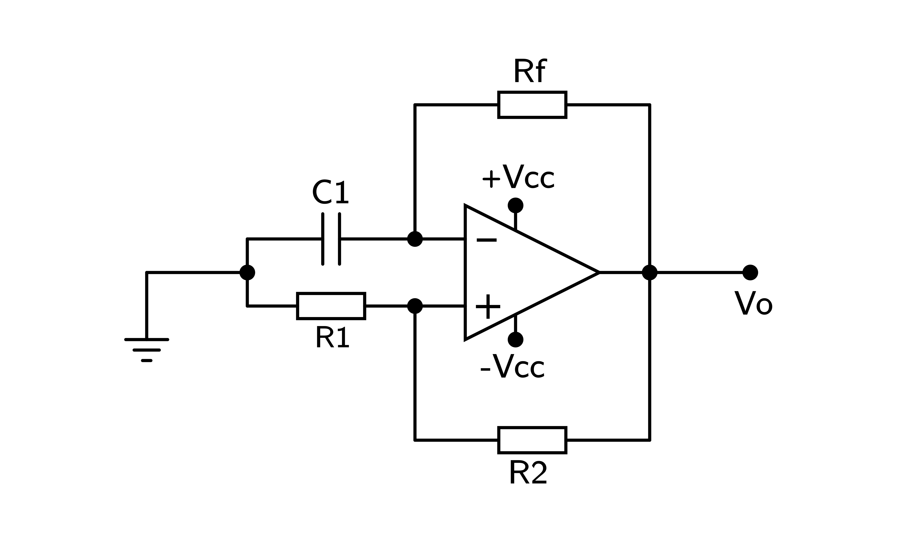
When circuit is \(+V_{sat}\), we will have high signal output and when circuit is \(-V_{sat}\), we will have low signal output. So, we will have square wave as desired. The circuit for astable multivibrator is shown below.
Here, frequency would be,
\[\label{eq:org1a80d97} f =\frac{1}{2 RC ln(\frac{2R_{1}+R_{2}}{R_{2}})}\]
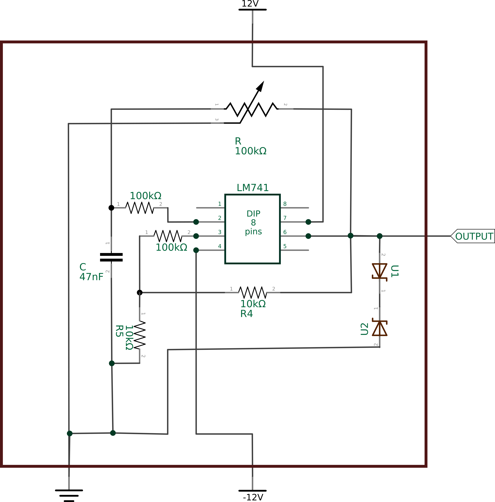
If, we take \(R_{2}=1.16R_{1}\) then,
\[\label{eq:orgfe0486d} f =\frac{1}{2RC}\]
Here, we took \(R_{1} = 10k\Omega\) and \(R_{2} = 11.6k\Omega\) such that \(\frac{R_{2}}{R_{1}}=1.16\). Also, you can see that we employed \(100k\Omega\) in input terminals for accurate and reliable signal.
Frequency range would be of (for constant capacitance at \(47nF\)) and here our \(R_1\) and \(R_2\) are equal at \(10k\Omega\),
\[\label{eq:org53e196d} f_{min} =\frac{1}{2\times 100k\times 47n \times ln(3)} \approx 97 hz\]
\[\label{eq:org59a9bfa} f_{max} =\frac{1}{2\times 100 \times 47n \times ln(3)} \approx 97 khz\]
Problems in getting Square wave
Square wave is mostly (maybe lesser) immune to those porblem of sine wave generator but still it has serious problem. Mainly of slew rate problem, which is quite fundamental to OpAmp than particular circuit. For understanding this phenomena we should exploit inner working of OpAmp.
Let's define some phenomena before taking serious talk on output signals.
1) Transient state: After some initial stable state, if the system (for us the OpAmp) comes at another steady state, the intermediate state is called transient state.
2) Steady state: The state at which system has fix value of response (stable) which independent on time is called steady state (response).
3) Slew rate: State is maximum rate of change with respect to microsecond of time.
\[S = \left.\frac{dV}{dt}\right|_{max}\]
It is measured in \(\frac{V}{\mu s}\). After seeing this, it's quite transparent to see the problem in our square wave generator. Also, the thing is slew rate is slop of signal with voltage and time domain. We can also see that it'll show us how gradual signal change from two steady state.
When signal is at \(\pm V_{sat}\), it is at steady state. When it's changes signal goes into transient state. A fact that Slew rate is fundamental property IC (LM741 has slew rate around \(\appro .5 V/\mu s\)), which shows us how some IC is more reactive and some are not. This also defines Bandwidth some times. If we take high frequency which change so rapidly that slew rate can't keep up to signal than signal will not even change after some frequency value.
Output of square wave
In out project we have IC LM741 with slewrate of \(0.5 V/\mu s\). Which directly means that our square wave will not look square wave after some frequencies value. For example look at this results after some \(10k Hz\) it is deforming.
For better result, we can use OpAmp with higher slew rate. Typically current feedback OpAmp has higher response type, consequently higher slew rate (in the order of \(4k V/\mu s\)). Even for some voltage feedback OpAmp has higher Slew rate in range of \(500 V/\mu s\) to \(3000 V/\mu s\). Some ICs and it's slew rate value are shown in this table.
| IC NAME | slew rate | gain bandwidth product | type |
|---|---|---|---|
| OPA 859QDSGRQ1 | kV/\(\mu\) s | MHz | voltage feedback |
| AD 9631ARZ | 1.3 kV | 110 MHz | |
| MAX 4212EUK+T | V/\(\mu\)s | MHz | voltage feedback |
| BUF 634AIDR | kv/\(\mu\)s | MHz | voltage feedback |
| OPA 695IDGKT | kV/\(\mu s\) | GHz | current feedback |
| THS3001IDGN | kV/\(\mu\) s | MHz | current feedback |
| 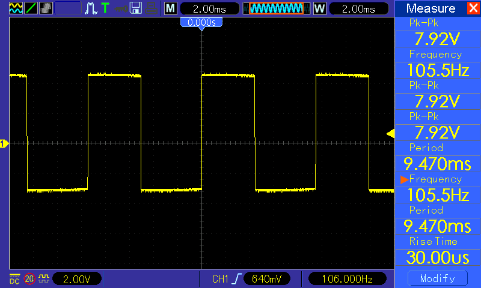 | ||
| 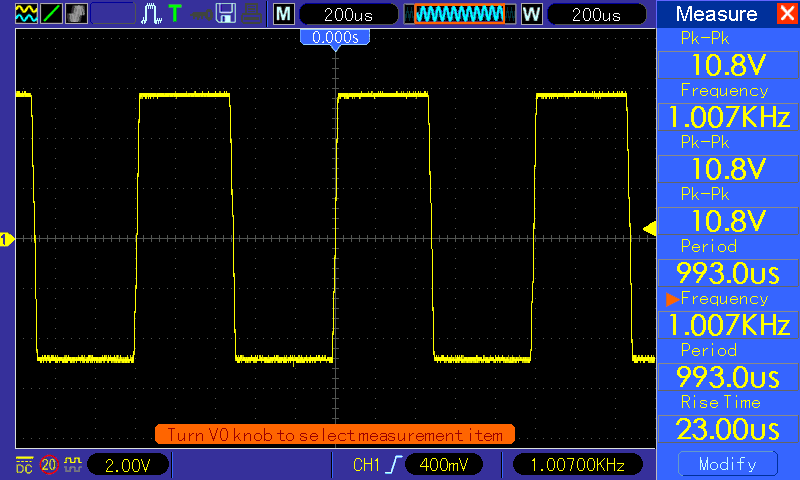 | 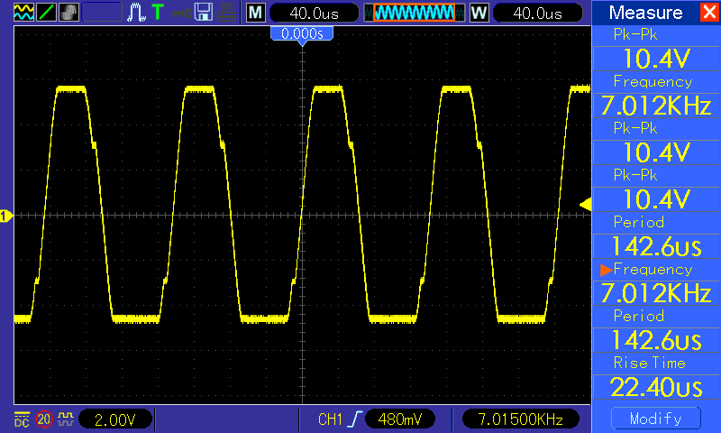 | |
| 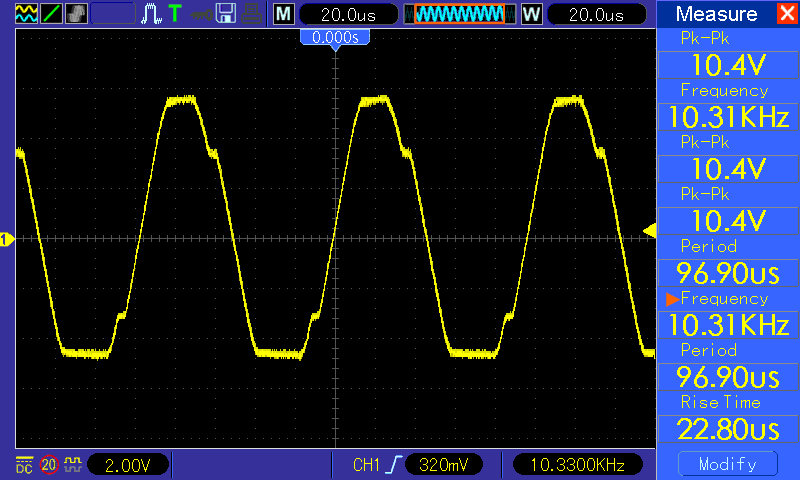 | 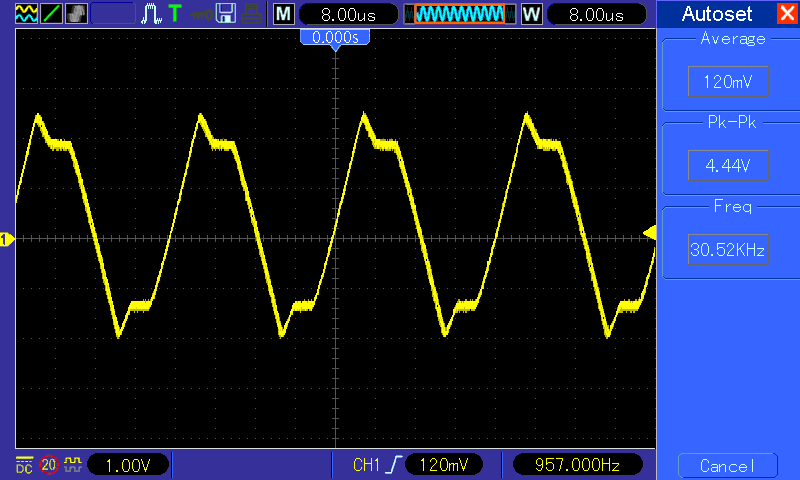 | |
| 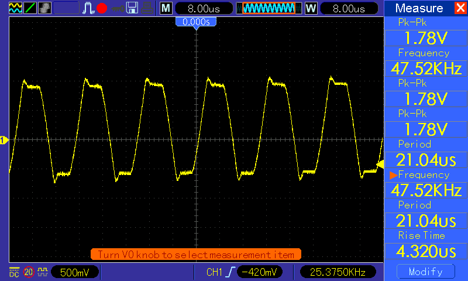 | 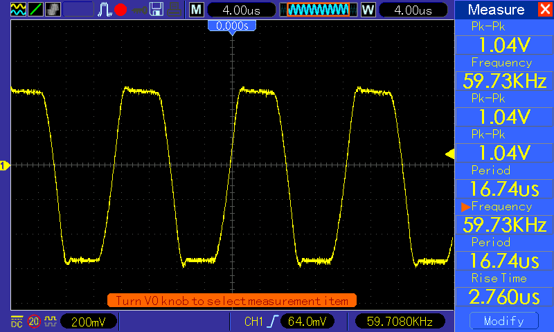 |
Frequency to Output voltage is necessary too. Frequency to output voltage is in this relation. This gives out frequency range which is up to 60kHz. Data if this is given on appendix.
generator 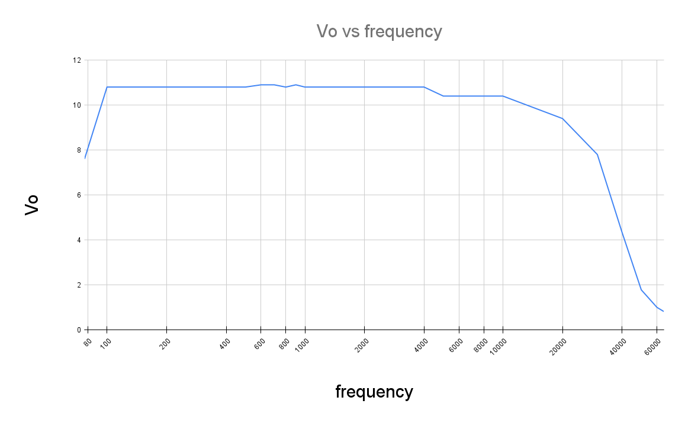
Block 3: Triangular Wave generator
We basically extend block 2 with integrator circuit. Which would give triangular wave as intended. Here, this integrator circuit differs from basic circuit that \(100k\Omega\) as feedback resister is joined. Which would give better stability and accurate output. Circuit diagram is shown below,
Here, \(R_{4}\) have to be \(10R_{3}\). Frequency is give by same relation as block 2.
Working of Integrator
A Basic integrator is shown in figure 7. Which can modified as out need. Here basic passive components like capacitor and resistor used with OpAmp. The basic Integrator is made of inverting amplifier configuration. It has capacitor as feedback component. We used resistor of \(100k\Omega\) in parallel to capacitor to stabilize integration operation. Since, capacitor as very low reactance at feedback. Here, inverting mode is employed so we have inverting input as virtual ground. Here, changing rate is determined by RC time constant. OpAmp produces ramp output till capacitor gets fully charged. The capacitor charges current decreases by the influence between the virtual ground and negative output.
Output of triangular wave.
triangular wave generator 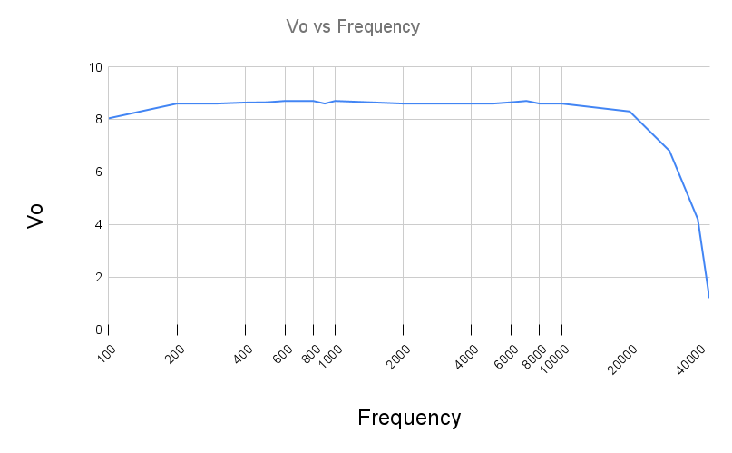
Here, we have results of triangular waves as \(V_o\) and frequency graph and practical data between them. You can see out practical data in appendix. All Output in CRO is shown in figure /ref{fig:tringraph}.
connection and switching
For connection of all this block we have used DPST switch with. This have two poles, one for power controlling and other for output controlling. Basic diagram of this switch is drawn in figure below.
When switch is ON it will connect 1 terminals with common and complete the circuit. When switch is OFF (pulled condition), the circuit will open and we will not get connection.
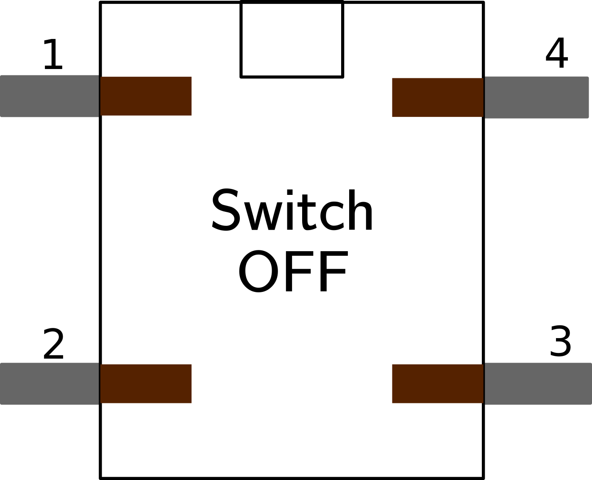 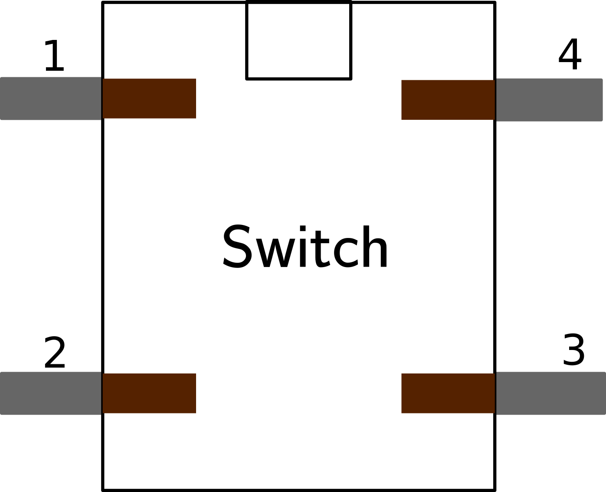
The +Vcc in common (upper common) is completely independent of Output terminal common (lower common). Which means switch can completely operate two tasks, which is when on it power the block and take output and give to CRO. You can see this is on block diagram in figure 1.
Appendix
Used components in this project
We used standard components in this projects. For resistor we used ceramic resistor and ceramic capacitor for capacitor. As problem with availability 47nF capacitor is plastic
Ceramic resistor
A ceramic resistor is a fixed resistor used in electronic circuits. As name suggests the resistor's name suggest it is made from ceramic as substrate. Ceramic resistors are compact and versatile. Ceramic resistors are made by mixing ceramic powder with metallic oxide powder to form a paste. The paste is then shaped into a cylinder or rectangle and dried before being fired in a kiln. The firing process produces a dense, hard, and non-porous ceramic substrate that is stable at high temperatures and resistant to thermal shock.
Advantages of ceramic resistors: a) high power rating. That means they can be used in higher power use case scenario compare to other type of resistors.\\
- As i said, ceramic resistor are compact and versatile.\\
- very reliable and low with tolerances. They get lower drift over time
and can be used in harsh scenarios.\\
Ceramics capacitor
As name suggest it is made of ceramic as its dielectric material. There are most common in making electronic circuits. Ceramic capacitors are made by applying a layer of ceramic material to a metal electrode, creating a sandwich-like structure. The electrodes are then connected to leads or terminals, forming the capacitor. The thickness of the ceramic layer determines the capacitor's capacitance value, with thinner layers resulting in lower capacitance values and thicker layers resulting in higher capacitance values.
Advantages of ceramic capacitor: a) ceramic capacitors can have high dielectric constant since ceramic have ceramic very low conductivity. This means it can store more energy in smaller package.\\
- they are small and lightweight. This is quite needed in modern
electronics circuits.\\
- they are reliable in harsh conditions like extreme temperature
variations, Making them suitable for almost every condition for electronic circuit purposes. They are also have very low drift with time making them suitable for long run.
We used 10nF capacitor of ceramic capacitor.
Polypropylene capacitor
Polyester film capacitors are film capacitors using a dielectric made of the thermoplastic polar polymer material polyethylene terephthalate (PET), trade names Hostaphan or Mylar, from the polyester family. They are manufactured both as metallized wound and stacked versions, as well as film/foil types. The dielectric films, depending on the desired dielectric strength, are drawn in a special process to an extremely thin thickness, and are then provided with electrodes. The electrodes of film capacitors may be metallized aluminum or zinc applied directly to the surface of the plastic film, or a separate metallic foil. Film capacitors, together with ceramic capacitors and electrolytic capacitors, are the most common capacitor types for use in electronic equipment, and are used in many AC and DC microelectronics and electronics circuits
We used 47nF capacitor of Polypropylene capacitor.
zener diode
A zener diode is a type of diode that is designed to operate in the reverse breakdown region of its voltage-current characteristics. This makes it useful as a voltage regulator in electronic circuits. The voltage across a zener diode is determined by the breakdown voltage, which is the voltage at which the diode starts to conduct in the reverse direction. Once the breakdown voltage is reached, the zener diode will conduct and maintain a relatively constant voltage across its terminals, regardless of changes in the applied voltage. This is main work of zener diode. It's straight voltage regulators with Fixed maximum voltage.
Here, we have 12 volt zener diode, which is adequate for our purpose and regulating small voltage variations.
If we take \(V_z\) as voltage across the zener diode, \(I_z\) as current through the diode, and R is the resistance of the load connected to the diode. In a typical voltage regulator circuit, the load resistance is known and fixed, so the voltage across the zener diode is determined by the current flowing through the diode. Current in reverse breakdown state,
\[I_z = \frac{V_z - V_r}{R}\]
where, \(V_r\) is the reverse voltage applied to the diode.
It can also be used as voltage clamper and voltage reference applications.
Data sheet of OpAmp we used (IC uA741CP)
Pspice simulations
We did Pspice simulation In https://www.falstad.com/circuit/ [cite:@Falsted] by Paul Falsted. Here are simlations result from different blocks. This outputs are for Potentiometer valued at \(3.3k\Omega\). We gain peek to peek voltage value at \(2.8917V\) for sine wave and \(2.11V\) and \(2.2\) in square wave and triangular wave respectively. This figures are from matplotlib [cite:@Hunter:2007][cite:@harris2020array], since we could not get from falsted. We got accurate p-p voltages.
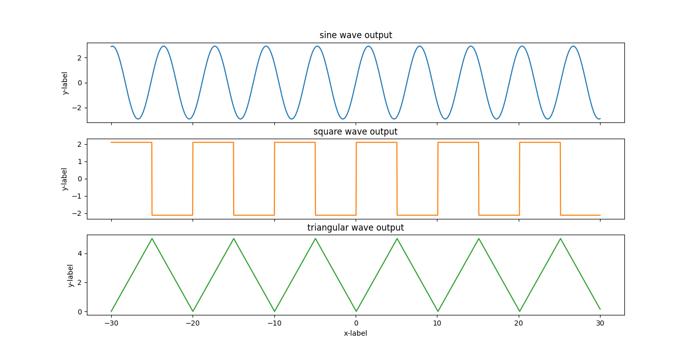
1
Paul Falsted. Online circuit simulator. https://www.falstad.com/circuit/. Accessed: 2023-03-30.
Ramakant A Gayakwad. Op-amps and linear integrated circuit. .
Charles R. Harris, K. Jarrod Millman, Stéfan J. van der Walt, Ralf Gommers, Pauli Virtanen, David Cournapeau, Eric Wieser, Julian Taylor, Sebastian Berg, Nathaniel J. Smith, Robert Kern, Matti Picus, Stephan Hoyer, Marten H. van Kerkwijk, Matthew Brett, Allan Haldane, Jaime Fernández del Río, Mark Wiebe, Pearu Peterson, Pierre Gérard-Marchant, Kevin Sheppard, Tyler Reddy, Warren Weckesser, Hameer Abbasi, Christoph Gohlke, and Travis E. Oliphant. Array programming with NumPy. , 585(7825):357–362, September 2020.
Paul Horowitz, Winfield Hill, and Ian Robinson. , volume 2. Cambridge university press Cambridge, 1989.
J. D. Hunter. Matplotlib: A 2d graphics environment. , 9(3):90–95, 2007.
Wikipedia contributors. Plagiarism — Wikipedia, the free encyclopedia, 2004. .